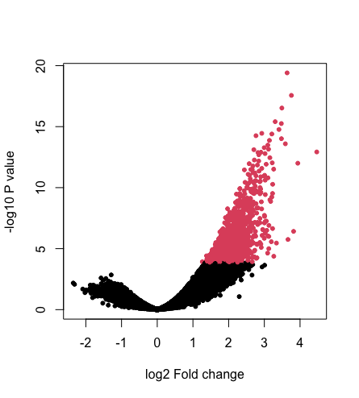
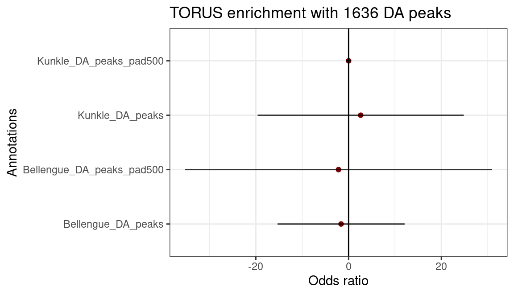
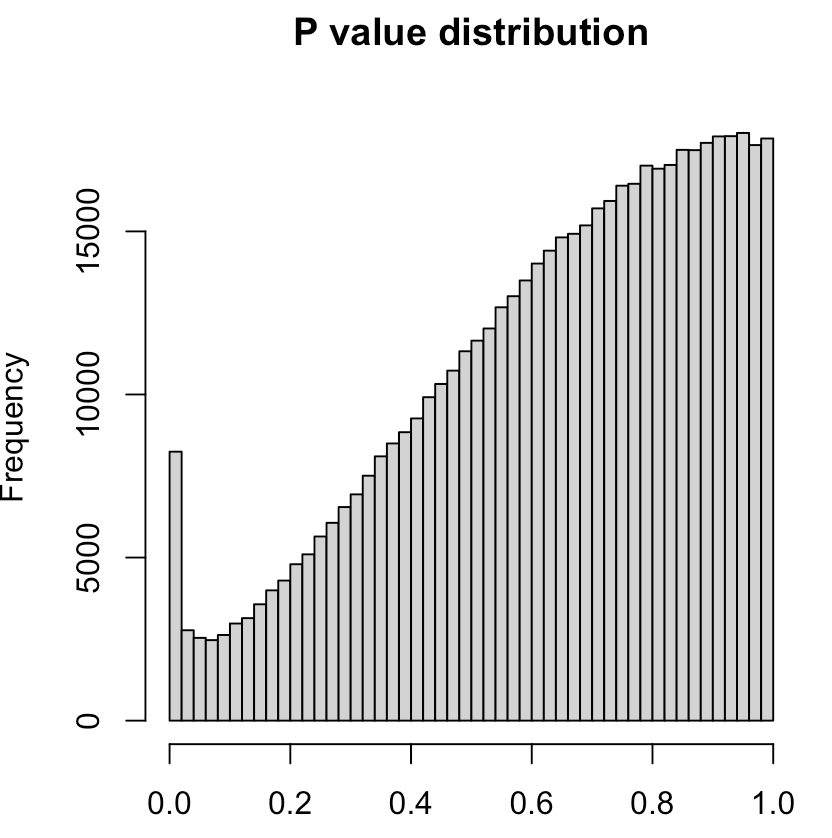
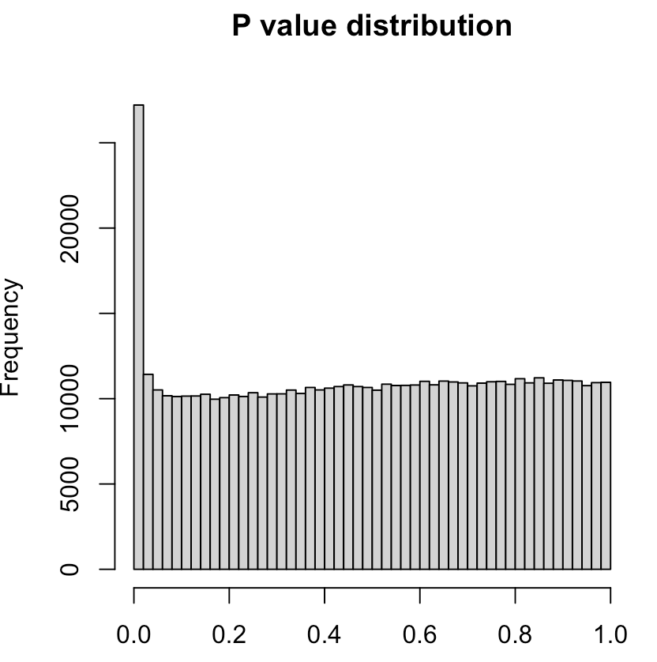
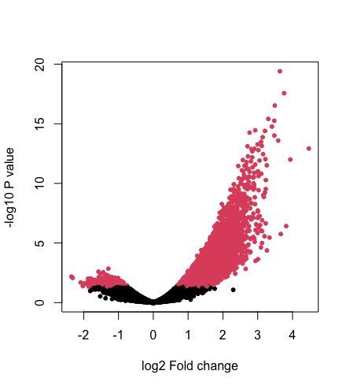
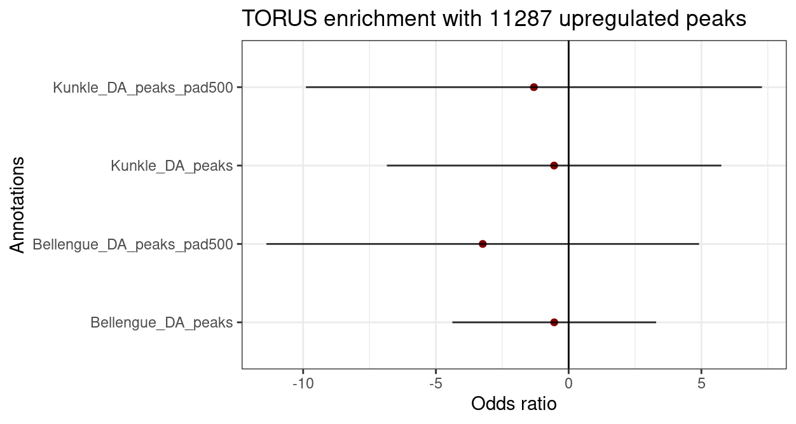

Last updated: 2026-06-13
Checks: 6 1
Knit directory: data_analysis/
This reproducible R Markdown analysis was created with workflowr (version 1.7.2). The Checks tab describes the reproducibility checks that were applied when the results were created. The Past versions tab lists the development history.
The R Markdown is untracked by Git. To know which version of the R
Markdown file created these results, you’ll want to first commit it to
the Git repo. If you’re still working on the analysis, you can ignore
this warning. When you’re finished, you can run
wflow_publish to commit the R Markdown file and build the
HTML.
Great job! The global environment was empty. Objects defined in the global environment can affect the analysis in your R Markdown file in unknown ways. For reproduciblity it’s best to always run the code in an empty environment.
The command set.seed(20260612) was run prior to running
the code in the R Markdown file. Setting a seed ensures that any results
that rely on randomness, e.g. subsampling or permutations, are
reproducible.
Great job! Recording the operating system, R version, and package versions is critical for reproducibility.
Nice! There were no cached chunks for this analysis, so you can be confident that you successfully produced the results during this run.
Great job! Using relative paths to the files within your workflowr project makes it easier to run your code on other machines.
Great! You are using Git for version control. Tracking code development and connecting the code version to the results is critical for reproducibility.
The results in this page were generated with repository version afb35a5. See the Past versions tab to see a history of the changes made to the R Markdown and HTML files.
Note that you need to be careful to ensure that all relevant files for
the analysis have been committed to Git prior to generating the results
(you can use wflow_publish or
wflow_git_commit). workflowr only checks the R Markdown
file, but you know if there are other scripts or data files that it
depends on. Below is the status of the Git repository when the results
were generated:
Ignored files:
Ignored: .DS_Store
Ignored: data/.DS_Store
Untracked files:
Untracked: analysis/AD_ATAC.Rmd
Untracked: data/LPS_DA_peaks_up.hg19_pad0.results
Untracked: data/LPS_DA_peaks_up.hg19_pad1000.results
Untracked: data/LPS_DA_peaks_up.hg19_pad2000.results
Untracked: data/LPS_DA_peaks_up.hg19_pad5000.results
Note that any generated files, e.g. HTML, png, CSS, etc., are not included in this status report because it is ok for generated content to have uncommitted changes.
There are no past versions. Publish this analysis with
wflow_publish() to start tracking its development.
The results of differential peak analysis were created by Siwei and uploaded to Dropbox. We downloaded the result to perform enrichment analysis using both S-LDSC and TORUS.
Initially, we applied the Benjamini-Hochberg method for multiple testing control. We obtained 1636 differential peaks with FDR < 0.05, all of which were upregulated peaks with log2 Fold change>2. Shown below is the volcano plot for the differential peak analysis, where red dots were FDR significant peaks.

Since 1636 peaks roughly covered <0.1% of the genome, this is too sparse for S-LDSC (LDSC recommended 1%-10% SNP coverage for annotation sets). We used TORUS to estimate the enrichment marginally for Alzheimer’s disease (AD) from two studies (i.e. Bellengue, et al. 2022 and Kunkle, et al, 2019). We also tried to extend the peaks by 500 base pairs downstream and upstream. Results of enrichment analysis remain insignificant.

The P value distribution is heavily leaning towards the high end (figure below), suggesting that the null model is not a good fit to the data and the statistical testing may be too conservative.

We used the package fdrtool to estimate the empirical null from the z-score and calibrate the P values.

Then we used qval<0.05 to obtain 11747 DA peaks with absolute log2 fold change > 0.5. Figure below is the new volcano plot.

After removing 460 down-regulated peaks, we used the 11287 peaks with window size extension (0, 1 kb, 2 kb, 5 kb down and upstream) to improve SNP covarage for S-LDSC. The fold enrichment results showed that the upregulated peaks were depleted of GWAS signals. The depletion was statistically significant in Kunkle.
We also tried adding all the candidate peaks (around half a millon peaks) as another baseline annotations to control for. Fold enrichment still remains less than 1.
We switched to TORUS to estimate the enrichment. The results still show negative enrichment

sessionInfo()R version 4.1.2 (2021-11-01)
Platform: x86_64-apple-darwin17.0 (64-bit)
Running under: macOS Big Sur 10.16
Matrix products: default
BLAS: /Library/Frameworks/R.framework/Versions/4.1/Resources/lib/libRblas.0.dylib
LAPACK: /Library/Frameworks/R.framework/Versions/4.1/Resources/lib/libRlapack.dylib
locale:
[1] en_US.UTF-8/en_US.UTF-8/en_US.UTF-8/C/en_US.UTF-8/en_US.UTF-8
attached base packages:
[1] stats graphics grDevices utils datasets methods base
other attached packages:
[1] DT_0.34.0 dplyr_1.1.2 workflowr_1.7.2
loaded via a namespace (and not attached):
[1] Rcpp_1.0.10 compiler_4.1.2 pillar_1.11.1 bslib_0.3.1
[5] later_1.3.1 git2r_0.32.0 jquerylib_0.1.4 tools_4.1.2
[9] getPass_0.2-4 digest_0.6.31 jsonlite_2.0.0 evaluate_1.0.5
[13] lifecycle_1.0.4 tibble_3.3.0 pkgconfig_2.0.3 rlang_1.1.6
[17] cli_3.6.5 rstudioapi_0.17.1 crosstalk_1.2.2 yaml_2.3.11
[21] xfun_0.54 fastmap_1.1.1 httr_1.4.7 stringr_1.6.0
[25] knitr_1.50 htmlwidgets_1.6.4 generics_0.1.4 fs_1.6.2
[29] vctrs_0.6.5 sass_0.4.6 tidyselect_1.2.1 rprojroot_2.1.1
[33] glue_1.8.0 R6_2.6.1 processx_3.8.6 otel_0.2.0
[37] rmarkdown_2.30 callr_3.7.6 magrittr_2.0.4 whisker_0.4.1
[41] ps_1.9.1 promises_1.5.0 htmltools_0.5.9 httpuv_1.6.10
[45] stringi_1.7.12